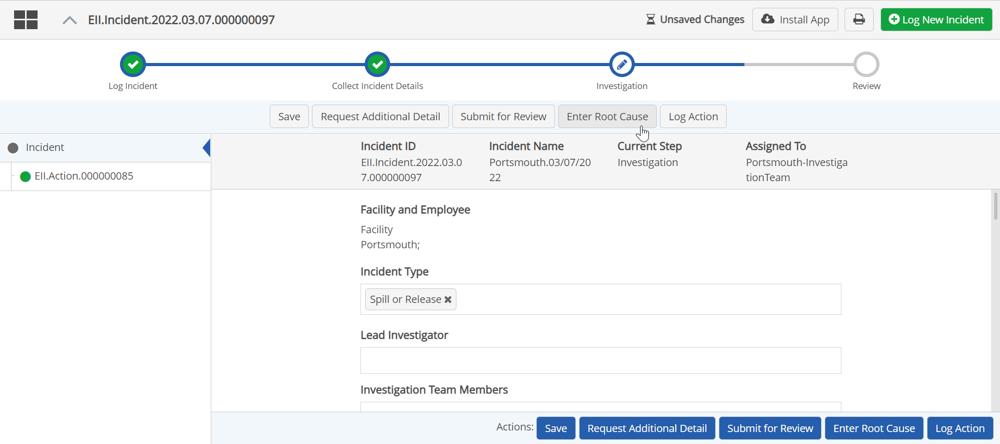
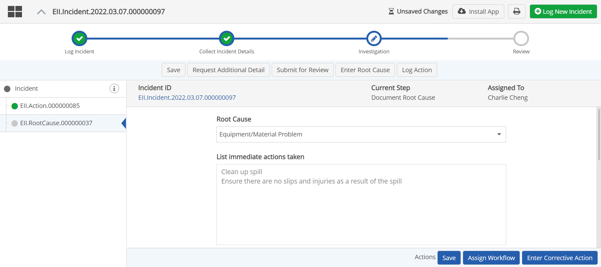

The Root Cause form allows you to identify the cause of an incident and create appropriate corrective actions.
To create and complete the Root Cause form:
Select Enter Root Cause from the buttons at the top.

A new tab is displayed with the form to document the root cause.
In the Root Cause form, select the root cause from the dropdown list.

After saving your form changes, you can create a corrective action by clicking the Corrective Action button. Corrective actions will be shown as child workflows in the table at the bottom of the page.
You may create more than one root cause form (click the Enter Root Cause button), if you need to define multiple causes. Each root cause can have its own related corrective actions.
Click the Corrective Action button at the bottom of the screen. See Create an Action.
To assign the Root Cause Analysis to another user:
Click in the Assign to box. Start typing the name of an individual or group. After you enter a few characters, a match or list of matches will be offered. Selected the name of the person or group you want.
You may add more than one assignee, if desired. (Any one of the selected assignees may then complete the form.)